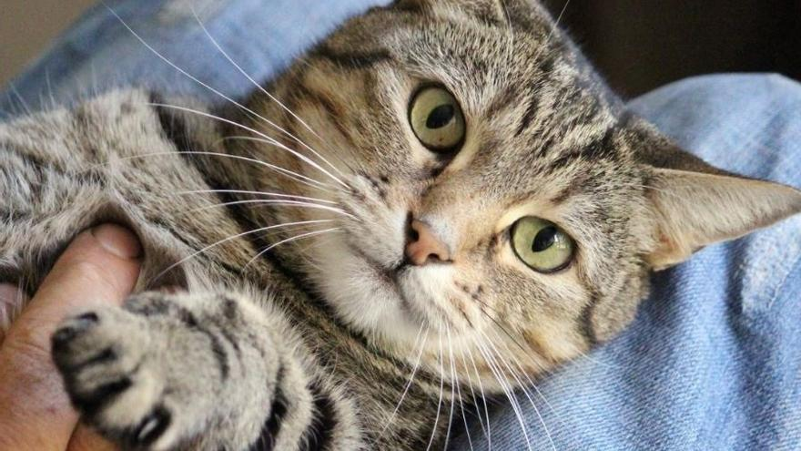
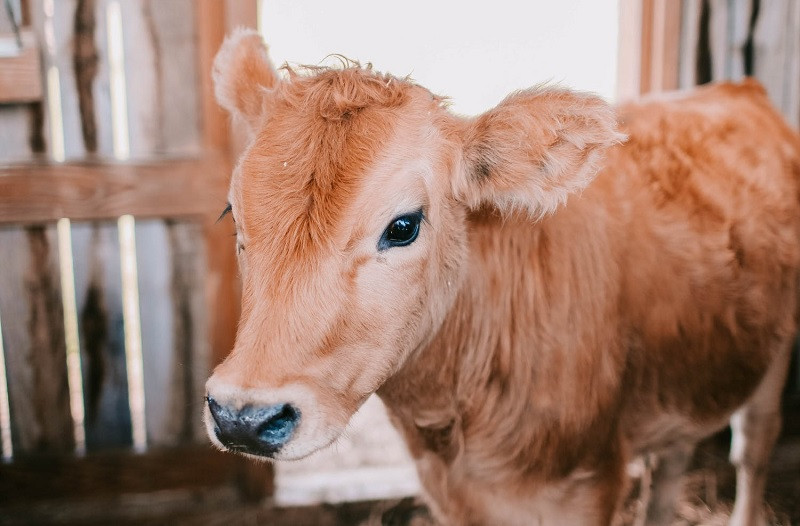

animales
domesticos
Hay muchos animales domesticos en Bolivia como puede ser,los gatos,perros,pericos,loros,conejos,ratones,zorros,ovejas,llamas,alpacas, gallinas,pollos,aves de variedad y otros muchos mas animales ya domesticados aun que algunos animales domesticados estan prohibidas pero aun asi las personas lo tienen como mascotas de hogar.
click para saver mas de animales
salvajes y animales domesticos

